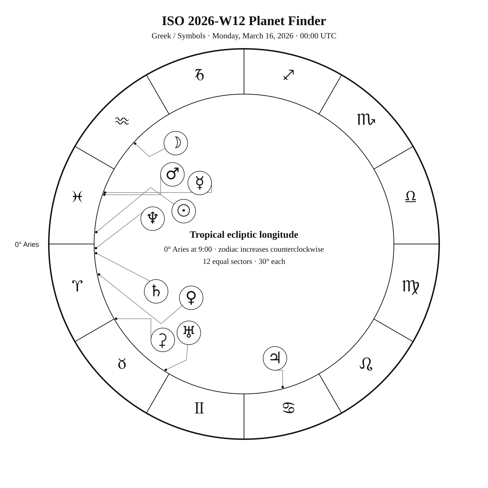
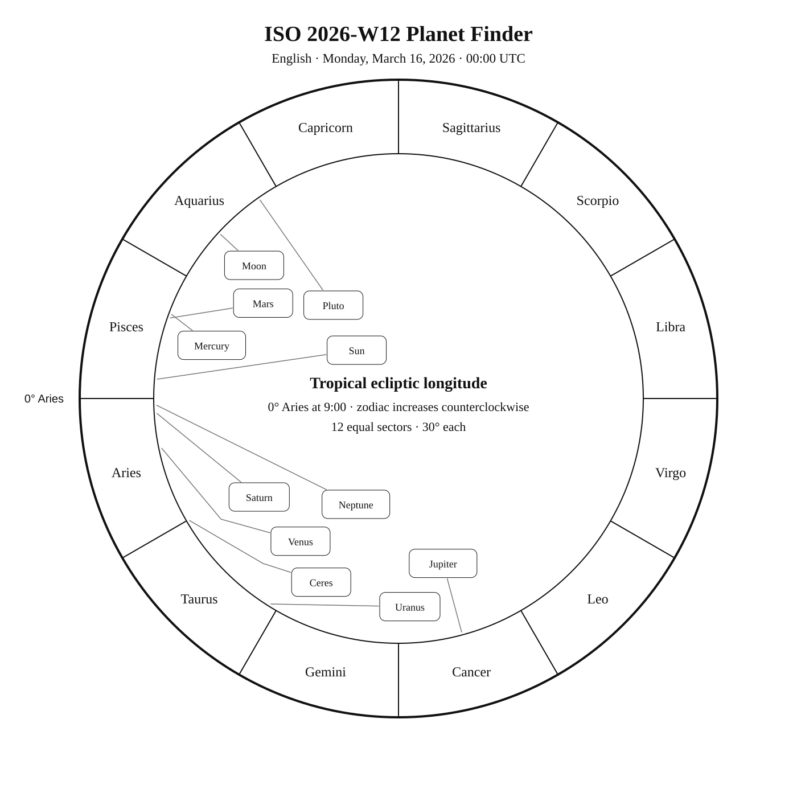
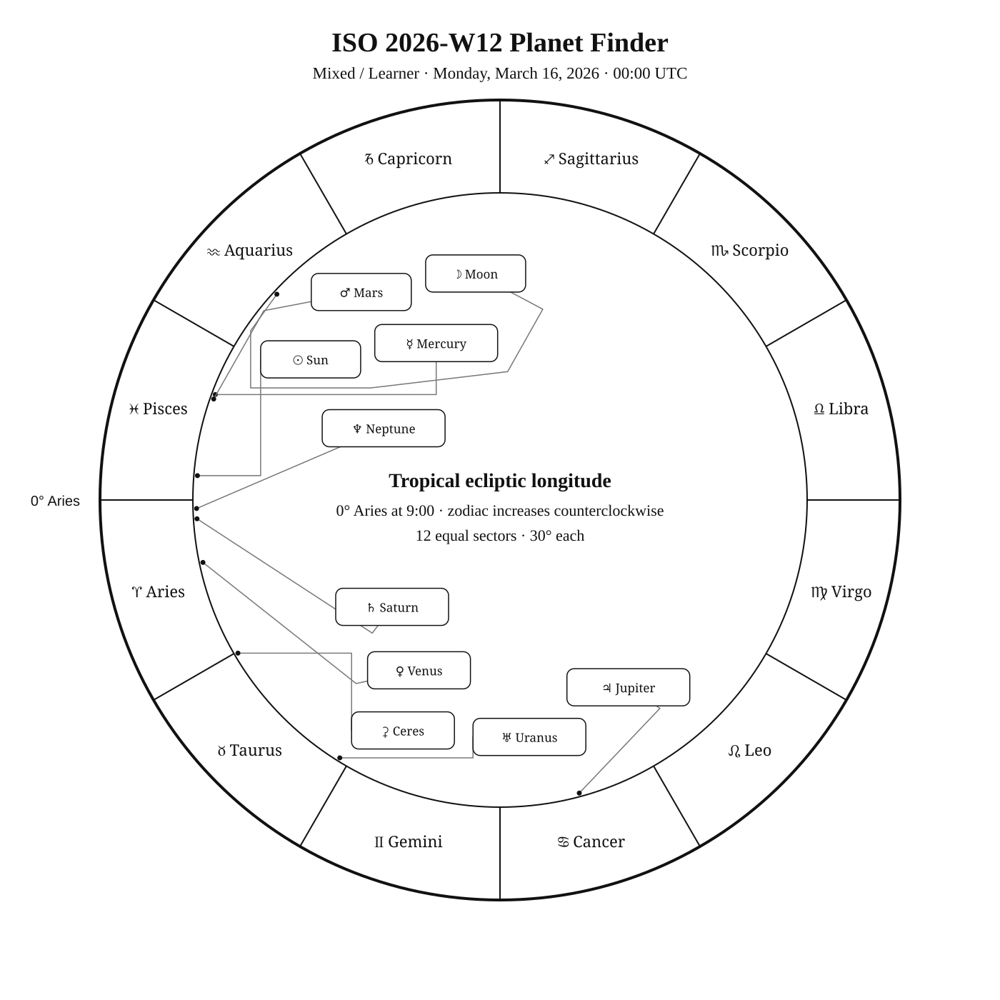

ISO 2026-W12
Week begins: Monday, March 16, 2026
Calendar
| Date | Zodiac day | Events |
|---|---|---|
| Mon, Mar 16, 2026 | ♓ 27 | α Pyx —  4 3.7 — Southern Winter 4 3.7 — Southern WinterAlsephina (δ Vel) —  V 2 1.9 2.0–2.4 — Southern Winter V 2 1.9 2.0–2.4 — Southern Winter |
| Tue, Mar 17, 2026 | ♓ 28 | |
| Wed, Mar 18, 2026 | ♓ 29 | M67 —  6 6.1 — Tropical Winter 6 6.1 — Tropical Winter |
| Thu, Mar 19, 2026 | ♓ 30 | 🌑 New Moon — 01:23:28 UTC |
| Fri, Mar 20, 2026 | ♈ 1 | ♈ Sun enters Aries · Vernal equinox · First Point of Aries · Ostara — 14:45:57 UTC Acubens (α Cnc) — 4 4.3 — Tropical Spring |
| Sat, Mar 21, 2026 | ♈ 2 | α Vol — 4 4.0 — Southern Spring |
| Sun, Mar 22, 2026 | ♈ 3 |
Weekly Solar-System Ephemeris
Snapshot: March 16, 2026 · 00:00 UTC
(-90° to +90°; default +45°)
| Body | ☉︎ | ☽︎ | ☿︎ | ♀︎ | ♂︎ | ♃︎ | ♄︎ |
|---|---|---|---|---|---|---|---|
| Ecliptic | ♓︎ 25°24′ β −0°00′ | ♒︎ 17°19′ β −1°57′ | ♓︎ 9°41′ β +2°11′ | ♈︎ 11°52′ β −1°01′ | ♓︎ 10°34′ β −1°05′ | ♋︎ 15°08′ β +0°22′ | ♈︎ 3°33′ β −2°07′ |
| Observing | ☉︎ | (mag -7.4) | ☉︎ (mag +2.0) | ☉︎ (mag -3.9) | ☉︎ (mag +1.2) | (mag -2.3) | ☉︎ (mag +0.9) |
| Rise | 06:03 | 04:49 | 05:20 | 06:44 | 05:39 | 11:38 | 06:33 |
| Set | 17:57 | 14:28 | 16:37 | 19:20 | 16:35 | 03:07 | 18:34 |
Extended targets:
| Body | ⚳︎ | ♅︎ | ♆︎ | ♇︎ |
|---|---|---|---|---|
| Ecliptic | ♉︎ 0°18′ β −5°15′ | ♉︎ 28°09′ β −0°11′ | ♈︎ 1°36′ β −1°18′ | ♒︎ 4°54′ β −3°54′ |
| Observing | (mag +9.1) | (mag +5.8) | ☉︎ (mag +7.8) | (mag +14.6) |
| Rise | 07:48 | 08:34 | 06:24 | 04:26 |
| Set | 20:47 | 23:27 | 18:25 | 13:14 |
β = ecliptic latitude (+ north, − south). Rise and set are Local Apparent Time for the selected latitude. Naked-eye classification becomes Daylight when the Sun is above the horizon at 21:00 LAT, and Solar Glare when the Sun is below the horizon but the body is too close to the Sun. The Sun uses glyph ☉ and text Visible.
Planet Finder



Sky Notes
ISO 2026-W12 runs from March 16 through March 22. Mercury and Mars are separated by about 0.9° in geocentric ecliptic longitude at the Monday 00:00 UTC snapshot. Saturn and Neptune are separated by about 1.9° in geocentric ecliptic longitude at the Monday 00:00 UTC snapshot.
Naked eye: 🌑 New Moon — 01:23:28 UTC. The dark Moon favors faint targets and extended star fields. Use Alsephina as the week’s fixed-sky framework.
Planets: Mercury and Mars are separated by about 0.9° in geocentric ecliptic longitude at the Monday 00:00 UTC snapshot. Saturn and Neptune are separated by about 1.9° in geocentric ecliptic longitude at the Monday 00:00 UTC snapshot.
Binoculars: Favor α Pyx, Acubens, α Vol; wide fields help connect the charted geometry to the real sky.
Small telescope: Concentrate on M67. Increase magnification only after the target and surrounding pattern are secure.
Substantial telescope: No fixed-sky Calendar object is classified as requiring a substantial telescope this week.
Other objects listed this week: None